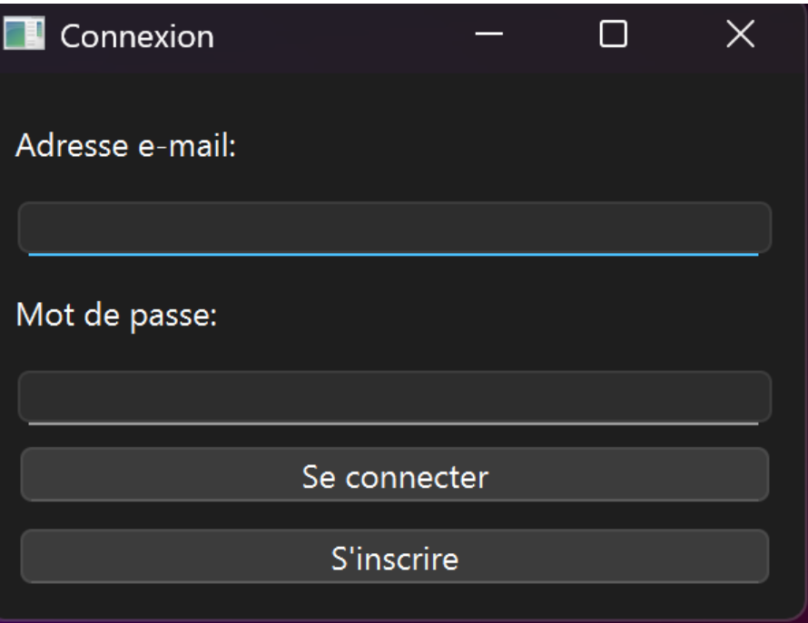
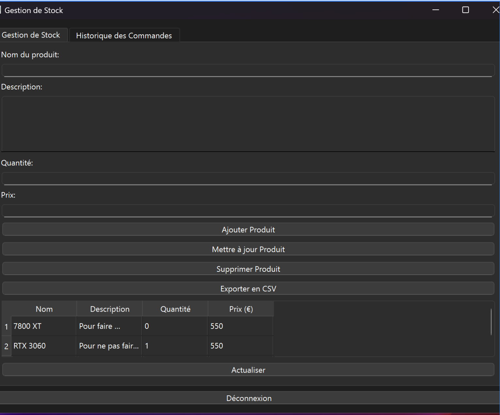

BTS SIO — Cours de développement — Dans le cadre du BTS SIO, ce projet de développement d'application avait pour objectif de mettre en pratique les compétences techniques acquises : développement Python, gestion de base de données SQL, et conception d'une interface utilisateur. L'application devait être fonctionnelle de bout en bout, de l'authentification à la gestion complète d'un stock de produits.
L'application de gestion de stock devait répondre à plusieurs exigences fonctionnelles et techniques :
La mise en place du projet nécessite les outils suivants :
Le développement de l'application s'est déroulé en 6 étapes progressives, de la mise en place de l'environnement jusqu'aux améliorations finales :
src/, db/, export/.venv).Stock.py, Inscription.py, Connexion.py.stock.db via Python.utilisateurs (id, login, mdp) et produits (id, nom, quantité, prix).sqlite3.connect()).Aperçu des interfaces produites à l'issue du développement :

Figure 1 : Interface de connexion — authentification utilisateur

Figure 2 : Interface principale — gestion du stock (CRUD)
Ce projet a permis de maîtriser le cycle complet de développement d'une application : conception, base de données, logique métier et interface utilisateur. La combinaison Python + SQLite + Tkinter constitue une stack autonome, sans dépendances externes.